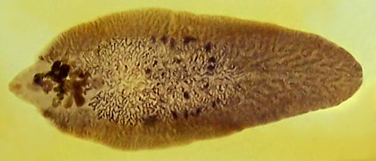

Pantljičare i metilji
Paraziti su organizmi koji svoj život provode na račun drugog organizma, zvanog domaćin, nanoseći mu štetu. Među njima se posebno ističu pantljičare i metilji, koji su i pored svoje neugledne spoljašnjosti izuzetno zanimljivi i važni sa biološkog, medicinskog i veterinarskog aspekta. Ovi parazitski crvi imaju složene životne cikluse, različite načine prilagođavanja, i značajan uticaj na zdravlje ljudi i životinja širom svijeta.
Pantljičare
Pantljičara (lat. Taenia) je rod parazitskih crva iz klase Cestoda, koji obuhvataju vrste koje su odgovorne za bolesti kod ljudi i drugih sisara. Pantljičare su dugoviti crvi koji žive u probavnom sistemu domaćina, uglavnom u tankom crevu. Njihova građa je specifična i prilagođena načinu života koji podrazumeva život kao parazit. Ovdje ćemo opisati detaljno osnovne delove građe pantljičare.
Skoleks (glava) Skoleks je prvi deo tela pantljičare, koji služi za pričvršćivanje na zid creva domaćina. Skoleks je obično prilično mali i može imati različite strukture u zavisnosti od vrste pantljičare. Usni aparat: Skoleks ima usni aparat koji se koristi za pričvršćivanje na crevnu sluzokožu domaćina. Neke vrste pantljičara (kao Taenia solium) imaju usne sa kukama koje pomažu u tome. sisaljke(usne) ili kuke: Neke vrste pantljičara mogu imati specijalizovane strukture poput usnih sisača, dok druge koriste male kukaste izrasline da bi se učvrstile na crevnoj steni.
Reprodukcija
Pantljičare su hermafroditi, što znači da svaka proglotida sadrži i muške i ženske reproduktivne organe. Svaka proglotida može proizvoditi jaja koja se oslobađaju iz tela domaćina. Kod mnogih vrsta pantljičara, jaja mogu ostati u spoljnim izmetima domaćina i ući u spoljnog domaćina (obično kroz kontaminiranu vodu ili hranu). Kad jaje dospe u odgovarajućeg domaćina (obično svinju, govedo ili neki drugi sisavac), iz njega izlazi larva koja se može razviti u cistu.
Dve najpoznatije vrste su goveđa pantljičara (Taenia saginata) i svinjska pantljičara (Taenia solium). Njihov razvojni ciklus uključuje dva domaćina – čovek je konačni domaćin, dok su krava i svinja prelazni. Čovek se najčešće zarazi unošenjem sirovog ili nedovoljno termički obrađenog mesa koje sadrži larve. U crevima čoveka, larve se razvijaju u odrasle crve i započinju novi ciklus.
Infekcija pantljičarom može biti tiha i neprimetna, ali u težim slučajevima izaziva simptome poput mučnine, slabosti, gubitka apetita, anemije, pa čak i ozbiljnijih neuroloških problema ako larve završe u mozgu (što se dešava kod svinjske pantljičare u slučaju autoinfekcije).
Metilji
Za razliku od pantljičara, metilji (Trematoda) su obično manji, listolikog oblika, i takođe spadaju u pljosnate crve. Imaju jednostavan digestivni sistem i obično dve usisne čašice – jednu oko usta i drugu na trbušnoj strani tela. Ove čašice im omogućavaju da se pričvrste za unutrašnje organe domaćina, kao što su jetra, pluća, creva, pa čak i krvni sudovi.
Metilji imaju složen razvojni ciklus koji obavezno uključuje puža kao prvog prelaznog domaćina. U njemu se larve razmnožavaju i prelaze u sledeći oblik, koji napušta puža i dalje inficira biljke, vodu ili druge životinje. Ljudi se najčešće zaraze unošenjem kontaminirane hrane ili vode, najčešće preko sirovih vodenih biljaka kao što su vodenika, rukola i slično.
Najpoznatiji predstavnik ove grupe je jetreni metilj (Fasciola hepatica), koji napada jetru ovaca i krava, ali može da inficira i ljude. Jetreni metilj izaziva ozbiljna oštećenja jetre, praćena bolovima u stomaku, temperaturom, uvećanjem jetre i opštom iscrpljenošću.
Druga opasna vrsta metilja je krvni metilj (Schistosoma spp.), koji parazitira u krvnim sudovima i izaziva bolest poznatu kao šistosomijaza. Ova bolest je veoma rasprostranjena u tropskim krajevima, naročito u Africi, Aziji i Južnoj Americi. Larve ovog metilja prodiru kroz kožu dok osoba boravi u kontaminiranoj vodi – najčešće dok kupa, pere veš ili lovi ribu – i zatim putuju kroz krvotok do organa gde polažu jaja. Ova bolest može dovesti do ozbiljnih posledica poput oštećenja jetre, bubrega, bešike, pa čak i paralize u najtežim slučajevima.

Značaj i borba protiv parazitskih crva
Pantljičare i metilji su mnogo više od "gadnih stvorenja" – oni predstavljaju ozbiljan globalni zdravstveni problem. Parazitske bolesti koje izazivaju posebno pogađaju siromašna i nerazvijena područja, gde su higijenski uslovi loši, a pristup lekovima i preventivi ograničen.
Prevencija
- Termička obrada mesa – uvek kuvati ili peći meso na dovoljnoj temperaturi.
- Pranje ruku – naročito pre jela i nakon boravka u prirodi.
- Izbegavanje konzumacije sirovih vodenih biljaka koje mogu biti kontaminirane larvama.
- Sanitarna kontrola i veterinarski nadzor nad stokom – redovne provere mesa i životinja.
- Unapređenje higijenskih uslova i zdravstvenog obrazovanja, posebno u seoskim i siromašnim sredinama.
Zaključak
Pantljičare i metilji su paraziti koji uprkos svojoj jednostavnoj građi i nevidljivosti imaju ogroman uticaj na živi svet. Njihova sposobnost da prežive u organizmu drugog bića, da se reprodukuju u velikim količinama i da se prenose složenim putevima čini ih fascinantnim i opasnim istovremeno. Razumevanje njihovog načina života i preduzimanje odgovarajućih mera zaštite neophodno je za očuvanje zdravlja ljudi i životinja. Iako mali i neprimetni, ovi crvi zaslužuju veliku pažnju i poštovanje u svetu nauke i medicine.